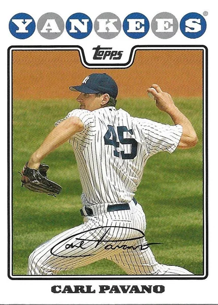

Carl Pavano "American Idle"
Career Highlights & Facts
(Facts are AI-generated and may require verification)
- Was the primary return piece in a blockbuster trade that sent a future Hall of Fame pitcher to the club that originally drafted him.
- Earned a championship ring as a key contributor to a title-winning squad before joining a high-profile organization in the same league.
- Became infamous in his new city for a series of bizarre, non-baseball injuries that kept him sidelined for extended periods.
Would you like to find out more about Carl Pavano?
Career Totals
| WAR | W | L | ERA | G | GS | SV | IP | SO | WHIP |
|---|---|---|---|---|---|---|---|---|---|
| 16.4 | 108 | 107 | 4.39 | 302 | 284 | 0 | 1788.2 | 1091 | 1.340 |
Statistics via Baseball-Reference.com
The Original Clue